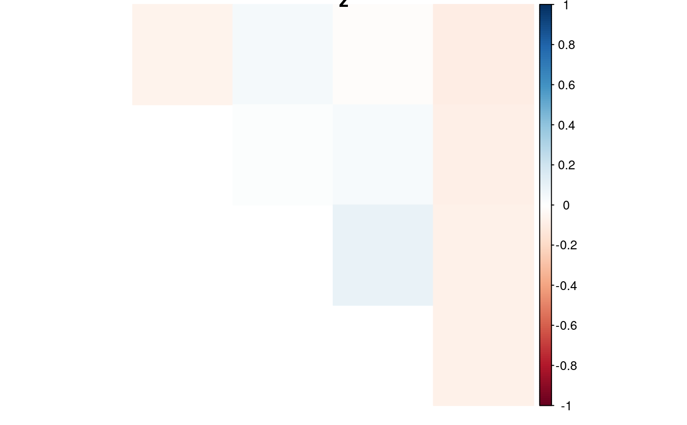

Formats the LD estimates in the form of a matrix and creates a heatmap of
these estimates. This heatmap is created using the
corrplot R package. I've adjusted a lot of the defaults
to suit my visualization preferences.
# S3 method for lddf plot( x, element = "r2", type = c("upper", "full", "lower"), method = c("color", "circle", "square", "ellipse", "number", "shade", "pie"), diag = FALSE, is.corr = NULL, tl.pos = "n", title = NULL, na.label = "square", ... )
| x | An object of class |
|---|---|
| element | Which element of |
| type | Character, |
| method | See |
| diag | Logical, whether display the correlation coefficients on the principal diagonal. |
| is.corr | See |
| tl.pos | See |
| title | What should the title be? Defaults to the element name. |
| na.label | See |
| ... | Additional arguments to pass to
|
(Invisibly) returns a matrix of the selected elements.
For greater plotting flexibility, see corrplot()
for the parameter options.
David Gerard
set.seed(1) ## Simulate genotypes when true correlation is 0 nloci <- 5 nind <- 100 K <- 6 nc <- 1 genomat <- matrix(sample(0:K, nind * nloci, TRUE), nrow = nloci) ## Haplotypic LD estimates lddf <- mldest(geno = genomat, K = K, nc = nc, type = "hap") ## Plot estimates of z plot(lddf, element = "z")